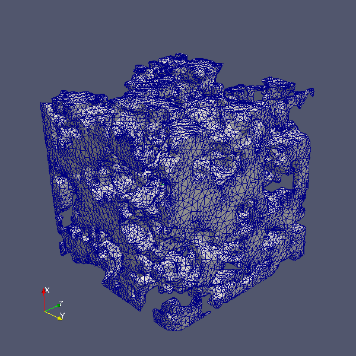

A software repository for my NSF Postdoctoral Research
The following summarizes the research conducted by Andrew E Slaughter while a National Science Founcation Postdoctoral Fellow at Cornell University.
This project is curently under development and until the findings are published the code is remaining in a private repository. For information regarding the author of this project visit aeslaughter.github.com.
Please note that this project is under development, as such so is the documentation and this website.
The objective of the work proposed is to research the use of stochastic, phase-tracking finite element techniques common in modeling alloy solidification to model the evolution of the snow micro-structure. A model of this type would improve the current understanding of snow metamorphism by providing a means to monitor the evolution of the ice matrix within the snow while accounting for uncertainties in the system. Uncertainties associated with the snow micro-structure include the random initial crystallographic orientation, a limited understanding of ice crystal growth kinetics, and perturbations that exist in the environmental conditions on a local scale. The technique proposed for exploration includes a deterministic, level set, adaptive mesh method capable of tracking heat, mass, and momentum transport efficiently in both two- and three-dimensions. Using this deterministic solution as a basis, a collocation-based stochastic solution strategy will be employed to account for the aforementioned uncertainties. The result is expected to be model that produces a probability distribution of snow topology realizations. The proposed solution approach is novel and will bring new insights in the underlying physical phenomena of snow metamorphism, which is of critical importance to climatology, hydrology, and avalanche risk reduction.
It is a primary purpose for the software developed from this project to be usable for furture reseach of my own and by others interested in using or expanding the project. As such, I am taking the task of documenting the code seriously.
The following link contains the documentation, created with Doxygen, for the code associated with this project. The source code is not included just the header, class, and function documentation. The complete source code will be available once the project is complete and the results published.
The Problem: The basis for the 3D model is expected to be 3D micro-CT scanned images of snow, similar to those discussed in Schneebeli and Sokratov (2004).
The Solution: Using a existing open-source libraries, CGAL, VTK, and ITK, I developed code for performing this task. The Vol2mesh class was developed as a wrapper class for the meshing procedures and includes the ability to mesh multiple subdomains, set the meshing and optimization critiera, and compute the mesh quaility. The command-line executable, v2m provides a command-line interface for the Vol2mesh class.
The Application:  The adjacet image is an example of a radom porous volume (randvol_30.tif) that was meshed using the code summariezd above. Using the v2m command line program or the Vol2mesh class this is accomplished easily as the following snippets demonstrate. Additional, examples are include in the source documentation here .
$ v2m ./randvol_30.tif --facet-size=2 --facet-distance=0.1
// Open the image and create Vol2mesh class
Vol2mesh v2m("randvol_30.tif");
// Set the meshing critiera
Vol2meshMeshCriteria crit;
crit.facet_size = 2;
crit.facet_distance = 0.1;
v2m.set_default_criteria(crit);
// Generate and output the mesh
v2m.generate_mesh();
v2m.write();